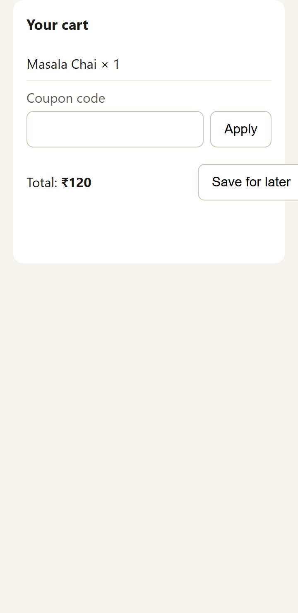
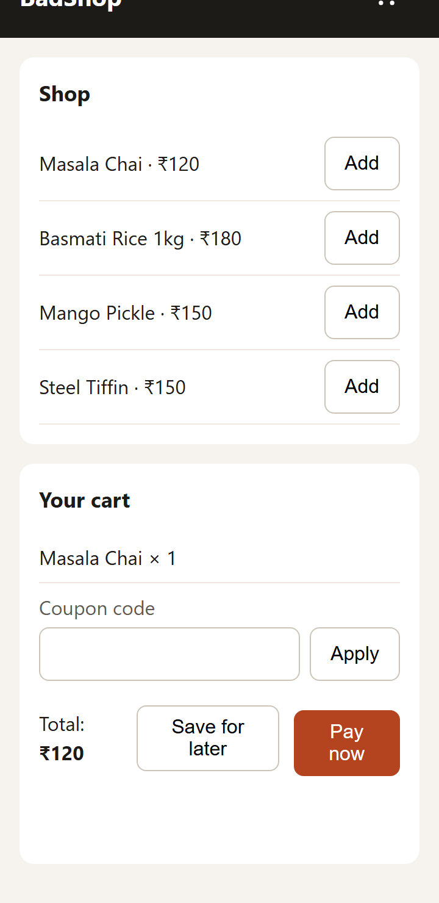
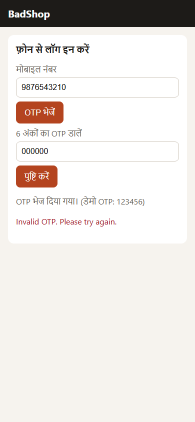
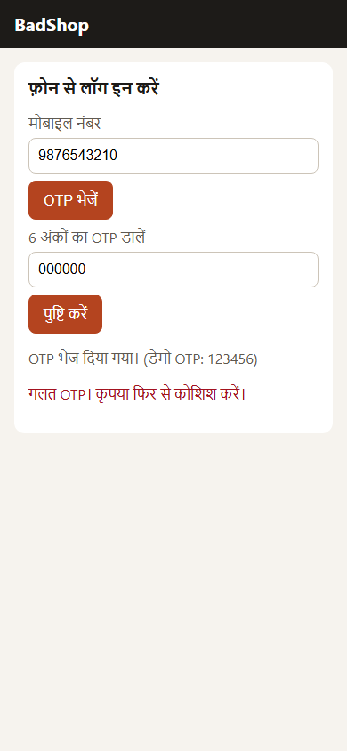
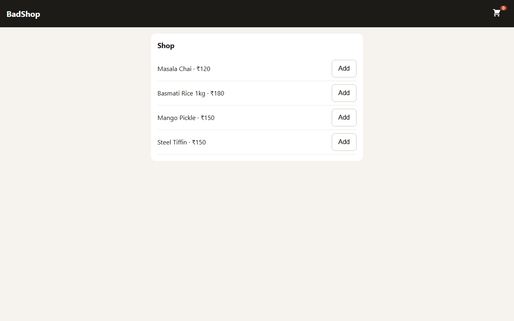
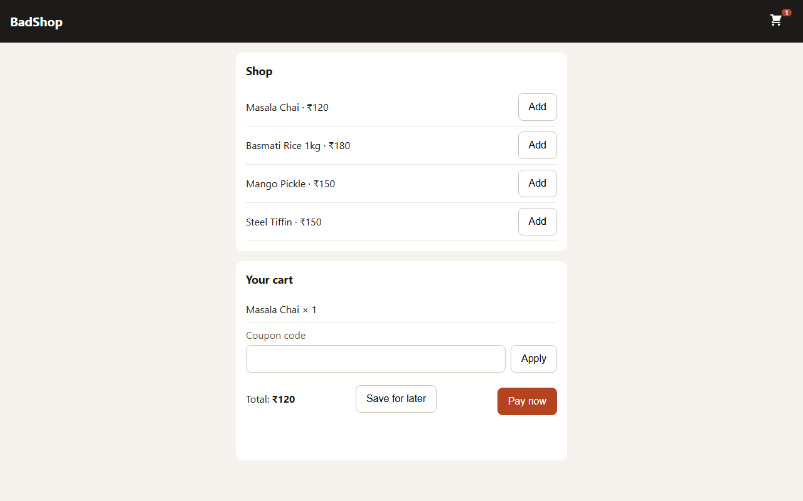

Nebius x NVIDIA Global AI Hackathon
A customer's complaint becomes proof of the bug, a fix and a test. On its own.
"OTP never comes!"
The developer tries it on a fast laptop. It works. Complaint closed.
13-24% of bug reports are never reproduced.
Press Break It. A secret bug is planted in the shop.
I shop like a customer and apply the coupon SAVE10.
Cart: ₹162. Charged: ₹180. So I complain, in my own words.
An AI twin replays it in a real browser with my screen, language and network.
Proven by browser evidence, not the model's word. NVIDIA Nemotron writes a fix.
The same user replays it on the fixed code. Fix proven.
Every case keeps the screenshots, the evidence, the one-line diff and the proof.






Slow 3G phone, 360 px screen: the Pay button is pushed off screen.
Hindi user: the wrong-OTP error appears only in English.
Screen-reader user: the cart button has no name, so it can't be found.
5 planted bugs · 3 full runs each
15/15
reproduced
15/15
fixed and proven
14/15
guarded by a test
0
false alarms on the clean shop
Measured with NVIDIA Nemotron 3 Super. Every run is in the repo.
Your angriest users
are your best testers.
github.com/yashasviyadav30/complaint-replay
Built solo by Yashasvi Yadav.